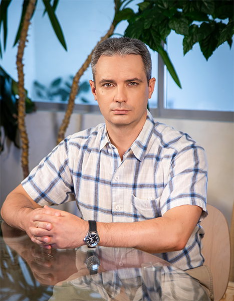
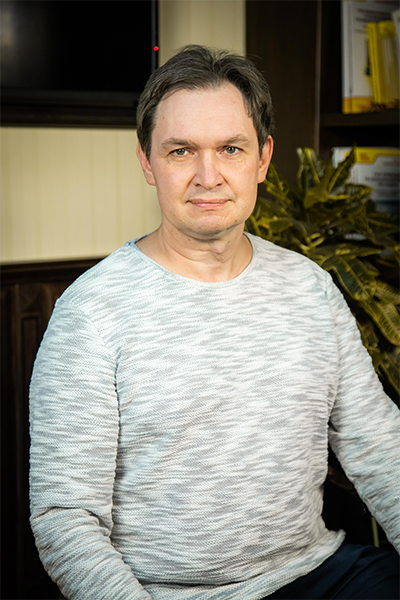

Программы
обучения
Приглашаем преподавателей вузов и колледжей, а также учителей школ в 2022 году принять участие в программе обучения по следующим направлениям:
Программа сотрудничества с вузами и колледжами
по встраиванию курсов и учебных материалов фирмы "1С"
Приглашаем преподавателей вузов и колледжей, а также учителей школ в 2022 году принять участие в программе обучения по следующим направлениям:
3 курса для начинающих программистов (подготовка на 1С:Профессионал)
Подготовка преподавателей по программированию на платформе 1С:Предприятие 8*
Разработка мобильных приложений
в системе 1С:Предприятие 8.3*
Доступ к курсам Концепция прикладного решения 1С:ERP Управление предприятием 2
Концепция автоматизации предприятия машиностроительной (приборостроительной) отрасли с 1С:ERP 2.5
2 бесплатные попытки тестирования 1С:Профессионал 1С:Управление нашей фирмой 8
EDT - разработка в системе 1C:Enterprise Development Tools.
Доступ к курсу Оперативное управление в малом бизнесе на основе 1С:Управление нашей фирмой 8
2 бесплатные попытки тестирования 1С:Профессионал "1С:Управление нашей фирмой 8"
Курс: Профессиональная работа в программе «1С:Документооборот 8»

Преподаватель Учебного центра №1. Опыт преподавания "1С" - более 15 лет. Практикующий экзаменатор с 2003 года аттестации 1С:Специалист по платформе "1С:Предприятие 8". Автор курса "Знакомство с платформой 1С:Предприятие 8" и других.
Автор курса и методист Учебного Центра 1С №1. Сертифицированный преподаватель ЦСО. Проводит курсы по программированию на платформе 1С:Предприятие с 2000 года.
Сертифицированный преподаватель 1С:Учебного центра №1. Эксперт демонстрационного экзамена WorldSkills по компетенции "ИТ-решения для бизнеса на платформе 1С:Предприятие 8".

Сертифицированный преподаватель-методист и специалист фирмы "1С". Стаж работы в 1С:Учебном центре №1 более 10 лет. Разработчик 15 авторских курсов.
Преподаватель 1С:Учебного центра №1 с большим опытом. Автор курсов по 1С:ERP, 1С:Управлению торговлей, 1С:Рознице и программированию.
Свыше 15 лет работает в качестве руководителя IT-направления. Имеет опыт руководства проектами автоматизации, организации розничных сетей и call-центров.
Преподаватели вузов и колледжей, а также учителя школ.
Доступ к выбранным программам обучения и учебным материалам.
Создать условия образовательным организациям для обучения современным информационным технологиям и продуктам "1С", подготовки граждан к условиям цифровой экономики и компетентных специалистов для цифровой экономики через интеграцию учебных материалов и сертифицированных курсов фирмы "1С" в учебный процесс.
За 7 лет реализации программы свыше 650 образовательных организаций России встроили учебные материалы и сертифицированные курсы фирмы "1С" в учебный процесс более 800 учебных программ и модулей в различных специальностях и направлениях подготовки профессионального образования.